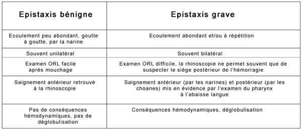
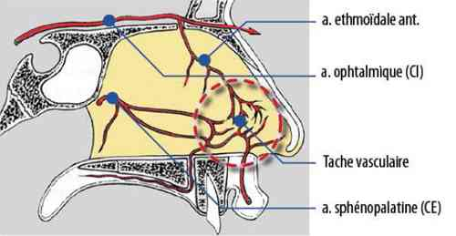
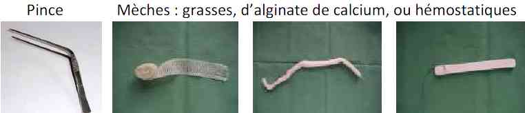
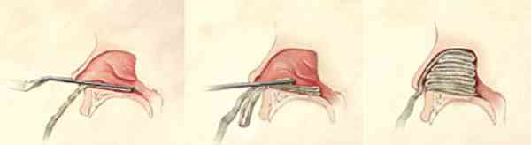
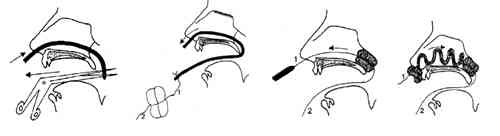
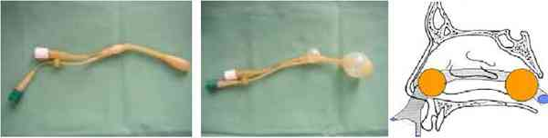
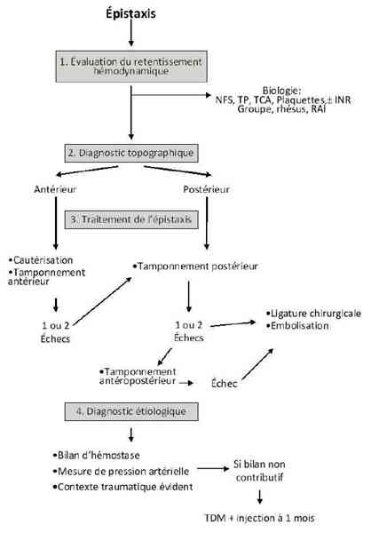

Bienvenue Sur Medical Education
Epistaxis
Spécialité : orl / pédiatrie / symptômes /
Points importants
-
Définition, épistaxis = saignement aigu des narines, fosses nasales ou oropharynx
-
Motif de recours fréquent aux urgences
-
Morbi-mortalité dépend de la présence de critères de sévérité et du terrain sous-jacent
-
Gestion par le médecin urgentiste dans 90% des cas, sans recours à l'ORL
-
Le traitement (méchage) lui-même peut être un facteur d'aggravation clinique (obstruction des VAS et dépression respiratoire)
Présentation clinique / CIMU
SIGNES FONCTIONNELS
Présentation clinique / CIMU
SIGNES FONCTIONNELS
Généraux
- Malaise/syncope
- Douleur thoracique
- Palpitations
Spécifiques
- Epistaxis antérieur actif/tari
- Epistaxis postérieur (goût métallique)
CONTEXTE
Terrain
- Pas de prédisposition en fonction du sexe
- Incidence entre 50 et 80 ans
Traitement usuel
-
Récent :
- aspirine, AINS
- antibiotiques (dose/durée/motif)
- sprays nasaux
-
Au long cours :
- antihypertenseurs
- aspirine, AINS, AVK, héparine, anti-agrégants plaquettaires (ticlopidine, dipyridamole)
Antécédents
-
Généraux :
- HTA
- insuffisance cardio-vasculaire
- insuffisance respiratoire chronique
- néoplasie
- malformation artério-veineuse
- coagulopathies (splénomégalie, thrombocytopénie, désordres plaquettaires, hémophile, insuffisance hépatique)
- HIV
-
ORL :
- déviation cloison nasale
- sinusite chronique
- épistaxis récidivant (méthode utilisée)
Facteurs de risque
- Troubles de la crase acquis ou iatrogéniques
- HTA
- ATCD d'épistaxis
- Terrain sous-jacent (insuffisance coronarienne, respiratoire)
- Age
Circonstances de survenue
- Climatique (temps froid, air sec)
- Post traumatique : traumatisme facial - nasal, corps étrangers intra-nasal, mouchage
- Infection locale (sinusite)
- Iatrogénique (pose sonde naso-gastrique, intubation naso-trachéale)
- Poussée hypertensive
EXAMEN CLINIQUE
Signes de gravité
 _637 Tableau Signes de gravité des épistaxis
-
On distingue :
- saignement continu
- saignement bilatéral
- saignement abondant
- saignement actif mal toléré (sueurs, anxiété, agitation, pâleur, HoTA)
-
Epistaxis bénin :
- écoulement peu abondant, goutte à goutte, par la narine
- souvent unilatéral
- examen ORL facile après mouchage
- pas de conséquences hémodynamiques, pas de déglobulisation
-
Epistaxis grave :
- écoulement abondant et/ou à répétition
- souvent bilatéral
- examen ORL difficile, la rhinoscopie ne permet souvent que de suspecter le siège postérieur de l'hémorragie
- saignement antérieur (par les narines) et postérieur (par les choanes) mis en évidence par l'examen du pharynx à l'abaisse langue
- conséquences hémodynamiques, déglobulisation
Signes généraux
- Fonctions supérieures (hypoperfusion cérébrale)
- Terrain vasculaire sous jacent (présence de souffle, évocateur d'artériopathie sous-jacente)
- Fonction respiratoire haute (apnée, ronflement, maladie de Pick)
- En rapport avec le terrain sous-jacent = insuffisance hépatique/insuffisance respiratoire chronique/coronarien
Signes spécifiques
- Recherche d'un point de saignement et éventuellement étiologie
-
Examen de la cavité nasale :
- mouchage prudent (évacuation de caillots sanguins)
- tête penchée en avant - respiration bouche ouverte
- rhinoscopie antérieure (90% des épistaxis sont visualisés dans la portion antérieure de la cloison nasale au niveau de la tâche vasculaire ) +/- complétée par un examen endoscopique (endoscope rigide)
 _227 Rappel anatomique de la vascularisation de la cloison nasale
- Examen de la cavité buccale avec abaisse langue = recherche d'un saignement postérieur - sa présence permet de différencier d'autres saignements (hématémèse - hémoptysie)
Signes étiologiques
- Traumatisme facial/OPN
- Cortège neurosensoriel de poussée hypertensive
EXAMENS PARACLINIQUES SIMPLES
Selon le terrain et/ou signes cliniques
- Hemocue en cas de saignement abondant ± continu
- ECG (en cas de douleur thoracique, palpitations, malaise, chez le coronarien)
- SpO2 (chez patient insuffisant respiratoire chronique)
CIMU
3 situations cliniques
- Situation A = épistaxis simple
- Situation B = épistaxis sur comorbidités
- Situation C = épistaxis grave
CCMU
- Situation A = tri 4
- Situation B = tri 3
- Situation C = tri 2
Signes paracliniques
-
Situation A = épistaxis simple
-
Situation B = épistaxis sur comorbidités
-
Situation C = épistaxis grave
BIOLOGIQUE
Situation A : pas de biologie
Situation B
-
Systématique :
- NFS (recherche anémie normocytaire, baisse hématocrite, thrombopénie ou hyperplaquettose)
- ionogramme sanguin - urée créatinine (fonction rénale, hyperurémie)
- En cas de troubles de la crase acquis ou iatrogénique, TP, TCA - INR
Situation C
- NFS (recherche anémie normocytaire, baisse hématocrite, thrombopénie ou hyperplaquettose)
- TP, TCA - INR (anomalie de la crase)
- Groupe sanguin - rhésus, RAI
- Ionogramme sanguin - urée créatinine (fonction rénale, hyperurémie)
- Selon situation clinique, bilan hépatique complet
IMAGERIE
- Pas d'imagerie indiquée en dehors du contexte traumatique
-
En cas de traumatisme :
- traumatisme OPN : radiographie des os propres du nez profil (recherche de fracture)
- traumatisme facial : scanner facial sans injection (recherche de fracture la base du crâne)
Diagnostic étiologique
CAUSES LOCALES
-
Traumatisme facial/nasal
-
Irritation de la muqueuse nasale :
-
climat
-
iatrogénique (sprays nasaux)
-
barotraumatisme
-
Anomalie septale :
-
déviation de la cloison nasale
-
perforation nasale
-
ulcère de la cloison
-
Tumoraux bénins - malins
CAUSES GENERALES
-
HTA
-
Maladies inflammatoires :
-
rhino-sinusites bactérienne, virales et allergiques
-
granulomatoses :
-
sarcoïdose
-
maladie de Wegener
-
tuberculose
-
syphilis
-
maladie de Churg et Strauss
-
Troubles de la crasse sanguine :
-
traitements anticoagulants (AVK, aspirine + AINS)
-
coagulopathies congénitales : hémophilie, maladie de Willebrand
-
coagulopathies acquises : thrombocytopénie, insuffisance hépatocellulaire
-
Capillarites (diabète, purpura fulminans, purpura rhumatoïde)
-
Thrombopathies (purpura thrombopénique, thrombasthénie de Glantzmann, insuffisance rénale)
-
Grossesse
-
Origine vasculaire à hémostase normale :
-
maladie de Rendu Osler :
-
angiomatose autosomique dominante
-
télangiectasies de la tâche vasculaire
-
récidives hémorragiques fréquentes avec anémie ferriprive chronique
-
traitements spécifiques : injection sous muqueuses sclérosantes (Ethibloc®), obturation des fosses nasales (intervention de Young), acide tranéxamique
-
capillarite
-
angiomatose hémorragique familiale
EPISTAXIS ESSENTIELLES : DIAGNOSTIC D'ELIMINATION
-
Fragilité muqueuse de la tâche vasculaire
-
Terrain : enfance, période estivale
-
Facteurs favorisants : grattage nasal, éternuements
Diagnostic différentiel
-
Hématémèse
-
Hémoptysie
Traitement
-
Situation A = épistaxis simple
-
Situation B = épistaxis sur comorbidités
-
Situation C = épistaxis grave
TRAITEMENT PREHOSPITALIER/INTRAHOSPITALIER
- climat
- iatrogénique (sprays nasaux)
- barotraumatisme
- déviation de la cloison nasale
- perforation nasale
- ulcère de la cloison
- rhino-sinusites bactérienne, virales et allergiques
-
granulomatoses :
- sarcoïdose
- maladie de Wegener
- tuberculose
- syphilis
- maladie de Churg et Strauss
- traitements anticoagulants (AVK, aspirine + AINS)
- coagulopathies congénitales : hémophilie, maladie de Willebrand
- coagulopathies acquises : thrombocytopénie, insuffisance hépatocellulaire
-
maladie de Rendu Osler :
- angiomatose autosomique dominante
- télangiectasies de la tâche vasculaire
- récidives hémorragiques fréquentes avec anémie ferriprive chronique
- traitements spécifiques : injection sous muqueuses sclérosantes (Ethibloc®), obturation des fosses nasales (intervention de Young), acide tranéxamique
- capillarite
- angiomatose hémorragique familiale
Diagnostic différentiel
- Hématémèse
- Hémoptysie
Traitement
-
Situation A = épistaxis simple
-
Situation B = épistaxis sur comorbidités
-
Situation C = épistaxis grave
TRAITEMENT PREHOSPITALIER/INTRAHOSPITALIER
Stabilisation initiale
-
Situations A/B/C :
- installation en position semi-assise, tête penchée en avant, respiration bouche ouverte
- rassurer le patient
- retirer tout les tampons
- mouchage énergique pour évacuation des caillots sanguins (ou aspiration des caillots)
- compression bidigitale des ailes narinaires (5 à 10 min) - si crampes musculaires, changer de main
-
Situation B :
- traitement symptomatique des décompensations des comorbidités liées à l'épistaxis (décompensation respiratoire, coronaropathie, insuffisance hépatique)
- traitement symptomatique des facteurs de survenue de l'épistaxis (surdosage en AVK, HTA)
-
Situation C :
- traitement spécifique du choc - remplissage vasculaire
- transfusion de culots globulaires selon le terrain/la tolérance clinique
Suivi du traitement situations A / B
- Vérification de l'arrêt du saignement antérieur ou postérieur par rhinoscopie + examen de la cavité buccale
-
Si persistance du saignement :
- mise en place de mèches hémostatiques dans les fosses nasales (tamponnement vestibulaire)
- méchage antérieur sous anesthésie locale
- méchage postérieur par ORL sous anesthésie locale
 _228 Photo Matériel pour méchage antérieur
 _229 Méchage antérieur
 _230 Méchage postérieur
N.B. : cautérisation proposée à distance du saignement (chimique/électrique/galvanique/froid)
Suivi du traitement situations situation C
- Application d'anesthésiques locaux et de médicaments vasoconstricteurs locaux
- Méchage antérieur des fosses nasales
-
Si persistance d'un saignement : recours ORL pour :
- tamponnement postérieur sous anesthésie locale
- tamponnement par sonde à ballonnet
- chirurgie ligature de l'artère sphénoïdale
- embolisation
 _231 Tamponnement par ballonet hémostatique
-
Mesures associées :
-
soins locaux :
- lavage de fosses nasales au sérum physiologique 3 fois/j (méchage résorbable)
- tulle gras sur le seuil narinaire (tamponnement (antéropostérieur)
- retrait des mèches non résorbables à 48/72 h
-
traitement symptomatique :
- antalgiques niveau I ou II
- antibiothérapie (le temps du méchage si non résorbable, 7 j si mèche résorbable)
- transfusion sanguine ou complémentation ferrique si besoin
-
soins locaux :
SITUATIONS PARTICULIERES
Epistaxis post-traumatiques
-
Fracture de la base du crâne :
- stabilisation par méchage antéropostérieur
- avant embolisation radiologique en urgence de l'artère carotide interne
-
Fractures des os propres du nez, traumatismes maxillo-faciaux ou interventions sur la pyramide nasale :
- moyens habituels de prise en charge
- si récidive dans les 48 h, avis ORL pour proposer une ligature chirurgicale de l'artère éthmoïdale antérieure
Epistaxis à l'occasion d'une poussée hypertensive
- Pas d'objectif tensionnel pour l'épistaxis
-
En ambulatoire, voie IM : clonidine
-
- Eviter les mèches habituelles si un tamponnement est indiqué
-
COMPLICATIONS DU TRAITEMENT
MEDICAMENTS
Surveillance
-
Situation A = épistaxis simple
-
Situation B = épistaxis sur comorbidités
-
Situation C = épistaxis grave
CLINIQUE
Situations A/B/C
- Saignement (antérieur/postérieur)
Situation C
- Paramètres vitaux (FC, Hemocue, signes adrénergiques)
- Saignement (antérieur/postérieur)
PARACLINIQUE
Situation A = pas de contrôle
Situations B / C
- Contrôle NFS
- Selon la situation clinique (troubles de la crase), contrôle TP - INR délai en fonction du traitement instauré
Devenir / orientation
-
Situation A = épistaxis simple
-
Situation B = épistaxis sur comorbidités
-
Situation C = épistaxis grave
ORIENTATION PRE-HOSPITALIERE
-
Situation A : urgences
-
Situation B : prévoir disponibilité de la spécialité ORL
-
Situation C : Structure disposant de services d'ORL, réanimation chirurgicale et radiologie interventionnelle (embolisation)
CRITERES D'ADMISSION
-
Situation B : hospitalisation en ORL, en cas de méchage postérieur
-
Situation C : hospitalisation en service de soins continus
CRITERES DE SORTIE
-
Situation A : épistaxis bénigne tarie
ORDONNANCE DE SORTIE
-
Antibiotiques si méchage (amoxicilline 2 g/24 h pendant 48 h ou céphalosporine de première génération)
-
Antalgiques pallier I
-
Solutions lavages
-
± mèches hémostatiques (alginate de calcium)
-
± pommade hémostatique locale (HEC®)
-
Contre-indications aux AINS, aspirine
-
En cas d'anti-agrégants et/ou AVK au long cours, discuter avec le médecin référent (cardiologue) du maintien du traitement selon les indications (Cf. Surdosage AVK)
-
Donner une fiche de surveillance et de conseils
RECOMMANDATIONS DE SORTIE = SURVEILLANCE LOCALE
-
Surveillance des signes de complications : fièvre (sinusite), douleur narinaire (hématome/nécrose/perforation septum nasal)
-
Consultation ORL dans les 48 à 72 h de manière systématique
-
Education pour prévenir la récidive
-
Education en cas de récidive (premiers gestes à faire)
Algorithme
-
Conduite à tenir devant une épistaxis
Algorithme
- Conduite à tenir devant une épistaxis
 _638 Algorithme Algorithme : épistaxis
Bibliographie
- Turgay Celik, Atila Iyisoy, Uygar Cagdas Yuksel, Serdar Karahatay, Yalcin Tan, Ersoy Isik. A new evidence of end-organ damage in the patients with arterial hypertension: Epistaxis. International Journal of Cardiology
- M Menard, Epistaxis, Urgences Médico-chirurgicales de l'Adulte, P. Carli, B. Riou, C. Télion édition Arnette
- P. Herman. Epistaxis et autres urgences hémorragiques ORL, Urgences 2003 : 28, 339-350
- Comment examiner et mécher un patient atteint d'épistaxis, Annales d'Otolaryngologie et de Chirurgie Cervico-Faciale, Vol 124, N° 4 - Septembre 2007 pp. 210-211
- Office régional de la santé du Centre du Manitoba inc. Feuille de renseignements des patients Impression : janvier 2007
- Prise en charge des surdosages en antivitamines K, des situations à risque hémorragique et des accidents hémorragiques chez les patients traités par antivitamines K en ville et en milieu hospitalier, HAS, Avril 2008
Auteur(s) : Olfa WALHA-CHAKROUN, Albéric GAYET